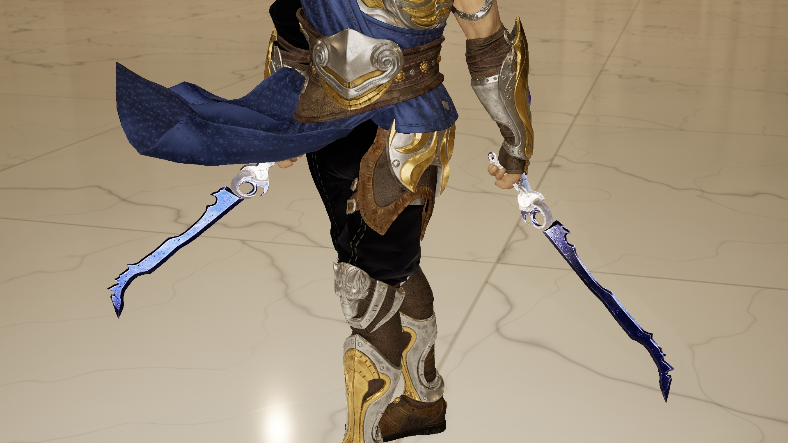

LIGHTBLADE · COSTUME REVIEW
蓝剑已定，轻装先行。
保留原脸、发型与敏捷双持动作。服装以修身衣料、少量护甲和轻盈轮廓为方向，配合已认可的蓝银双剑。
轻装重新筛选
上一套服装已淘汰
黑灰衣料、银色护肩那套不适合，已停止下载与适配。
继续寻找更符合轻盈武艺高手定位的现成开放授权服装。新资源会先展示真实作者预览，再安排 UE 穿戴。
两套服装均已淘汰
冰蓝丝缎与深蓝立领长衣都不符合方向，已撤出推荐，不需要下载。保留原轻装和已认可的蓝银双剑作为基线，重新寻找轻盈、有武艺高手气质的服装。
下一套轻装资源筛选
一套更收敛的布料、皮革与单肩轻甲候选，先看作者预览和现有蓝剑的搭配方向；尚未导入 UE。